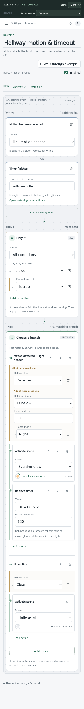
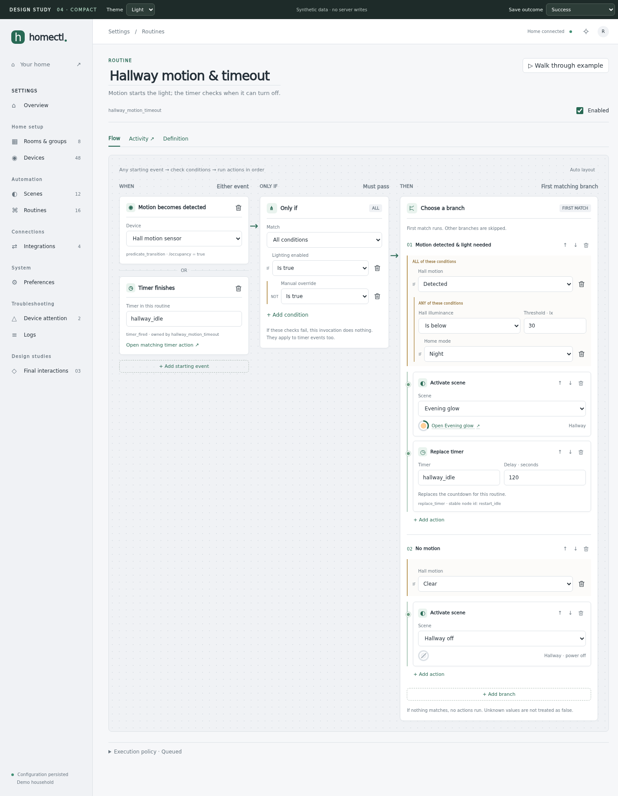

The earlier routine is the visual reference: one canvas, three lanes and compact open nodes. Scenes use aligned desktop rows, with cards reserved for narrow layouts.
When → Only if → Then returns to three desktop lanes on the dotted canvas. Branching lives inside the Then lane, with lighter separators. Inputs stay open. Phone follows the same sequence vertically with the familiar colored sections. Tabs, related-entity links, reordering and draft retention remain.


Explicit power, brightness, color and transition values align in columns. Device and scene links keep their source controls and resolved preview within the same row structure. Repair is inline. On a phone, those same controls become labeled cards.
Complexity extends the original layout where needed. It does not replace the whole routine with section panels or turn the desktop scene editor into a card grid. Simple routines keep the earlier layout; larger routines add native branch structure within it.
Creation, color picking, shared drafts and save recovery from Study 03 remain in the prototype. Previous interaction studies ↗ · Engineering handoff ↗ · Review and browser checks ↗
The new layouts are ready for review. Production implementation has not started. The original routine URL remains available for comparison.